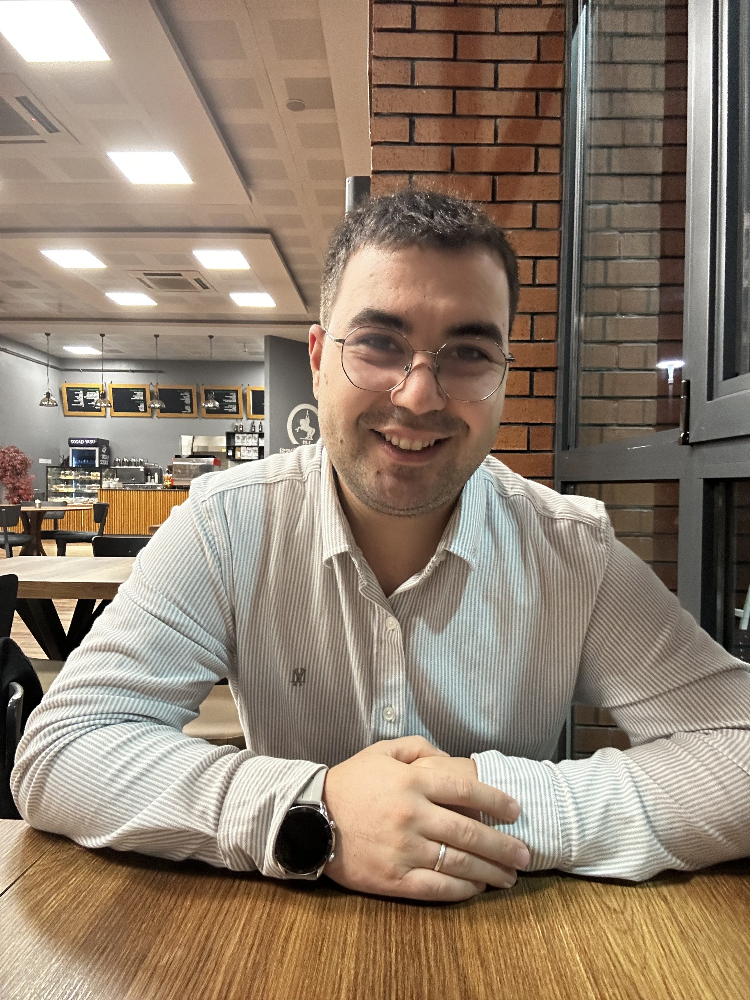

Kaygı aslında bizi korumaya çalışan bir alarmdır. Ancak sürekli çaldığında yaşam kalitemiz düşer...
Geçmiş Paylaşımlar

Hakkımda
Merhaba, ben Semih Naroğlu. Kastamonu Üniversitesi Psikolojik Danışmanlık ve Rehberlik (PDR) mezunuyum.
Değişim, her bireyin kendi içindeki gücü keşfetmesiyle başlar. Bilimsel yöntemleri, danışan odaklı samimiyetle harmanlayarak size bu yolda profesyonel bir eşlikçi oluyorum.
Kariyer Rehberliği
Kariyer yolculuğunuz yalnızca bir meslek seçimi değil, kendinizi gerçekleştirme serüvenidir. Hangi yoldan gideceğinize karar vermek her zaman kolay olmayabilir; ancak geleceğinizi belirsizlikten kurtarıp şansa bırakmamak sizin elinizde.
İlgi, yetenek ve mesleki değerlerinizi bilimsel araçlarla analiz ederek; hem hayallerinize hem de gerçekliğe en uygun, tatmin edici kariyer rotasını sizinle birlikte, güvenle çiziyoruz.
Kariyer Danışmanlığı Sürecimiz
1. İhtiyaç Analizi
Hedeflerinizi ve kararsızlıklarınızı konuşuruz.
2. Bilimsel Değerlendirme
Size en uygun mesleki envanterleri uygularız.
3. Keşif ve Yorumlama
Test sonuçlarını analiz edip potansiyelinizi somutlaştırırız.
Çocukluk ve ergenlik, fırtınalı olabildiği kadar muazzam bir potansiyel barındıran eşsiz bir büyüme serüvenidir. Bu karmaşık gelişim dönemlerinde yaşanan duygusal ve davranışsal zorluklar, aslında anlaşılmayı bekleyen birer mesajdır.
Biz bu süreçte; çocuğunuzun iç dünyasını güvenle ifade edebileceği yargısız bir alan açıyor, aile iş birliğini merkeze alarak sağlıklı ve dayanıklı bireyler yetiştirme yolculuğunda size profesyonel bir rehberlik sunuyoruz.
Danışmanlık Süreci Adımları
1. Aile İle İlk Görüşme
Ebeveynlerden gelişim öyküsünü ve beklentileri dinleriz.
2. Güven Bağının Kurulması
Çocuğun/Ergenin kendini güvende hissedeceği bağı inşa ederiz.
3. Bireysel Danışmanlık
Bilimsel teknikler ve dışavurumcu yöntemlerle çalışırız.
4. Aile İş Birliği
Çocuğun mahremiyetini koruyarak aileyi sürecin parçası yaparız.
Kaygı, aslında bizi hayattaki tehlikelere karşı korumaya çalışan son derece doğal bir alarm sistemidir. Ancak bu alarm sürekli çaldığında, yaşam kalitemiz düşer ve zihnimiz yorucu bir savaş alanına döner.
Amacımız bu duyguyu tamamen yok etmek veya ondan kaçmak değil; onu anlamlandırmak ve tepkilerimizi kontrol altına alabilmektir. Sizi ele geçiren belirsizlik hissiyle tek başınıza savaşmak yerine, kendinize şefkatle yaklaşabileceğiniz güvenli bir alanda, kaygıyı yönetme becerilerini sizinle birlikte inşa ediyoruz.
Kaygıyı Yönetme Haritamız
1. Keşif ve Anlamlandırma
Sizi tetikleyen durumları ve bedensel tepkilerinizi tanırız.
2. Farkındalık
Kaygının "düşünce-duygu-davranış" döngünüzü nasıl etkilediğini inceleriz.
3. Başa Çıkma Becerileri
Nefes ve zihin egzersizleriyle "sakinleşme alet çantanızı" oluştururuz.
4. Kademeli Güçlenme
Kaygının sizi yönettiği değil, sizin onu yönettiğiniz bir düzen kurarız.